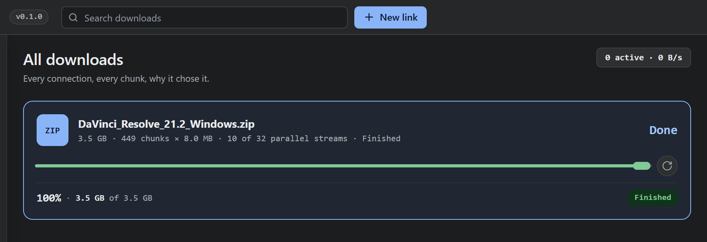

Capture that asks first.
The add-on cancels nothing until Sucr has taken the file.
a page’s video player
lecture-04.mp4
Sucr is ready.
One panel, two sizes
Full for media, a pill for a link.
podcast-ep-118.mp3
The panel moves; it never covers the player’s controls.
What the panel carries
Name, size, host, formats, two answers. No progress bar: progress belongs in Sucr.
Two keys. Their defaults are still open.
Inserttakes
Deletekeeps it in the browser, for this site
One popup, three answers
It says which of the three is true, and stops there.
Sucr
Connected
- lecture-04.mp4
- slides-week-04.pdf
- session-3.crdownload
Chrome has nothing to call yet. Registering writes one key under your account; no admin prompt.
This tab: 3 links found
- Connected
- A one-shot token comes back from Sucr; only then does the browser let go.
- Waking
- The host started the app. About a second, and the row says so.
- Not registered
- One HKCU key per browser, no elevation, re-checked at boot.
Where the take lands
The real app, on this machine, with the library it already has.

When the answer is no
A refusal the user can read.
Kept in the browser
The link is signed and expires in 12 seconds. A second copy would fail.
Sucr cancels nothing until it has said yes.
What Sucr declines
- Signed links that expire mid-transfer.
- POST forms and blobs.
- Hosts that refuse Sucr.
The toolbar badge
3
Three captures found
!
Not registered, open the popup